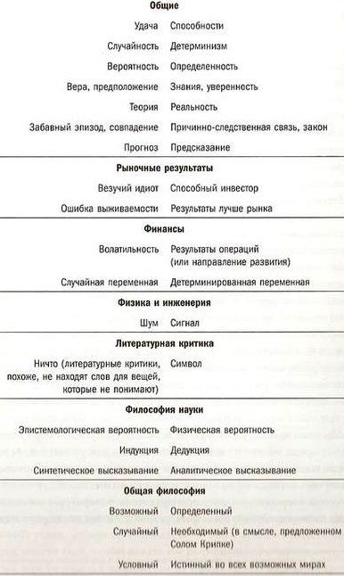

{% include JB/setup %}
{% raw %}
<div>

<span id="id3"><div class="title1">
<p class="p">Пролог</p>
</div><p class="subtitle">МЕЧЕТИ В ОБЛАКАХ</p><p class="p1">Эта книга о замаскированном везении, которое часто путают с чем-то другим (например, способностями), и в целом о замаскированной случайности, которую часто принимают за детерминизм. Есть выражение «везучий дурак», когда речь идет о человеке, получающем выгоду от непропорциональной доли удачи, но приписывающем свой успех чему-то другому, обычно какой-то определенной причине. Такая путаница встречается в самых неожиданных областях, даже в науке, хотя и не так подчеркнуто и очевидно, как в мире бизнеса. Она характерна для политики и, например, может выражаться в рассуждениях президента страны о рабочих местах, которые «он» создал, о «его» восстановлении экономики и об инфляции в результате действий «его предшественника».</p><p class="p1">Мы все еще очень недалеко ушли от наших предков, бродивших по саванне. Наши взгляды полны предрассудков даже сегодня (я бы сказал — особенно сегодня). Точно так же, как когда-то некий первобытный человек почесал нос, увидел, что пошел дождь, и придумал замысловатый метод чесания носа для «вызывания» долгожданных осадков, мы связываем экономическое процветание с понижением ставки Федеральной резервной системой или успех компании с появлением «у руля» ее нового президента. Книжные полки полны автобиографиями успешных мужчин и женщин, излагающих собственные версии достижения вершины (есть выражение «в нужное время и нужном месте», ослабляющее эффект любого их заявления). Этой путанице подвержены люди самых разных взглядов: преподаватель литературы придает глубокое значение совершенно случайным проявлениям художественного стиля, а экономист с гордостью обнаруживает «закономерности» и «аномалии» в данных, сформированных случайным образом.</p><p class="p1">Рискуя показаться необъективным, я должен сказать, что воспитанный на книгах разум может быть умышленно склонен к путанице между <em class="calibre">шумом</em> и <em class="calibre">значением</em>, то есть между случайно сформированным фоном и точно определенной сутью. Однако это не приносит большого вреда, мало кто считает искусство инструментом познания Истины — скорее попыткой убежать от нее или сделать ее более удобоваримой. Символизм — это дитя нашей неспособности и нежелания принять случайности. Мы придаем значение теням любой формы, а в кляксах видим человеческие силуэты. «Мечети вижу в облаках», — сказал в XIX веке Артюр Рембо, французский поэт-символист. Эта интерпретация привела его в «поэтическую» Абиссинию (в Восточной Африке), где над ним издевался ливанский работорговец-христианин, где он заразился сифилисом и лишился ноги в результате гангрены. В девятнадцать лет он с отвращением бросил писать стихи и, не дожив до сорока, так и не став известным, умер в палате марсельского госпиталя. Но было уже слишком поздно. Европейские интеллектуалы проявили необратимый интерес к символизму, за который мы до сих пор расплачиваемся — психоанализом и прочими модными увлечениями.</p><p class="p1">Печально, но некоторые люди слишком серьезно играют в эту игру; им платят за то, чтобы они чересчур внимательно вглядывались в предметы. Всю свою жизнь я страдал от конфликта между любовью к литературе и поэзии и моей сильнейшей аллергией на большинство преподавателей литературы и критиков. Французский мыслитель и поэт Поль Валери с удивлением слушал комментаторов своих стихов, находивших значения, которые до этого ему не приходили в голову (конечно, ему было указано, что они вызваны к жизни его подсознанием).</p><p class="p1">В целом мы недооцениваем долю случайности почти во всем, но из-за этого, возможно, не стоило бы начинать писать книгу, если только ее автор не совсем уж полный дурак. Тревожит то, что и наука лишь недавно начала учитывать случайность (быстрее информации растет только шум). Теория вероятности молодая отрасль математики, а прикладное использование вероятности как дисциплина находится в зачаточном состоянии. Вдобавок есть подтверждения, что зачастую «храбрость» бывает вызвана скорее недооценкой случайности, чем благородным желанием поставить себя под удар во имя убеждений. Судя по моему опыту (и профессиональной литературе), люди, рискующие экономически, скорее жертвы заблуждений (к чрезмерному оптимизму и самоуверенности приводит недооценка ими возможных негативных последствий), чем герои. Их «готовность рисковать» нередко доказательство одураченности случайностью.</p><p class="p1">Посмотрите на левый и правый столбцы табл. 1. Главную мысль книги лучше всего выразить так: она касается ситуаций (многие из них трагикомические), когда левый столбец по ошибке принимают за правый. Разделы таблицы иллюстрируют также основные темы обсуждения, на которых базируется книга.</p><p class="p1"><sup class="a"><strong class="calibre1">Табл. 1.</strong> Таблица путаницы</sup></p><p class="p1"><sup class="a"><strong class="calibre1">Центральные различия, которые обсуждаются в книге</strong></sup></p><div class="image">

</div><p class="p1">Читатель может поинтересоваться, а не заслуживает ли внимания обратная сторона медали, то есть случаи, когда детерминированность принимается за случайность. Не следует ли нам задуматься о ситуациях, в которых могут игнорироваться и узор, и послание? У меня есть два ответа. Во-первых, я не особенно обеспокоен существованием нераспознанных узоров. Мы постоянно сталкиваемся с многословными и запутанными интерпретациями практически всех проявлений природы, выраженных сложными кривыми (линии на ладони, следы на кофейной гуще в чашке из-под кофе по-турецки и т. д.). Вооружившись домашними суперкомпьютерами и сетевыми процессорами, при помощи теории сложности и теории хаоса ученые, полуученые и псевдоученые обнаруживают чудеса. Во-вторых, нам нужно учитывать цену ошибки: по моему мнению, перепутать правый столбец с левым не столь затратно, как наоборот. Даже популярная поговорка гласит о том, что нет ничего страшнее неизвестности.</p><p class="p1">Однако какими бы интересными ни были эти темы, обсуждать их нелегко. Есть мир, в котором, я убежден, доминирует устойчивая привычка принимать удачу за способности, — это мир финансовых и товарных рынков. Повезло мне или нет, но именно в нем я живу большую часть своей взрослой жизни. Он мне знаком лучше всего. Кроме того, экономика является идеальной (и самой увлекательной) лабораторией для понимания указанных различий. Ведь именно в бизнесе путаница сильнее, а ее последствия наиболее разрушительны. Например, у нас часто складывается ошибочное впечатление, что некая стратегия превосходна, или что бизнесмен наделен «видением», или что трейдер талантлив, в то время как на 99,9 % они обязаны своими результатами случаю, и одному только случаю. Попросите объяснить причины своего успеха инвестора, получившего прибыль, он предложит вам глубокую и убедительную интерпретацию результатов. Зачастую эти заблуждения намеренны и должны называться шарлатанством.</p><p class="p1">Если и есть общая причина путаницы между левыми и правыми частями нашей таблицы, то это наша неспособность критически мыслить — мы радуемся, принимая догадку за правду. Такова наша природа. Наш мозг не снабжен адекватным механизмом работы с вероятностями. Эта слабость присуща даже специалистам, и иногда только им.</p><p class="p1">Герой комиксов XIX века пузатый буржуа господин Прюдом<a href="part0029.html#id32" class="a">[7]</a> ходил всюду с большим мечом по двум причинам: во-первых, для защиты Республики от врагов, во-вторых, чтобы в случае необходимости направить ее на путь истинный. Точно так же у этой книги двойная цель: защитить науку (луч света в шуме случайности) и поправить ученого, если он собьется с курса (отдельные ученые не знают, что такое «стандартная ошибка», и не ориентируются на критическое мышление; более того, они доказали свою неспособность иметь дело с вероятностями в социальных науках и неспособность признать этот факт, с чем связано большинство неприятностей). Будучи практиком неопределенности, я сполна насмотрелся на продавцов «средства от всех болезней», рядящихся в одеяния ученых, особенно много таких в экономике. Больше всего одураченных случайностью можно найти там.</p><p class="p1">Мы дали трещину, которую не заклеить, по крайней мере в сложившейся среде, но это плохая новость только для утопистов, верящих в идеальное человечество. Сегодня у мыслящих людей сложилось два полярных взгляда на человека, и между ними почти нет полутонов. С одной стороны, это ваш преподаватель литературы из колледжа, наша двоюродная бабушка Ирма, старая дева, без конца расточающая нотации, ваш писатель книг о том, «как-стать-счастливым-за-двадцать-шагов» и «как-стать-лучше-за-неделю». Это называется «утопическое видение» и ассоциируется с Жан-Жаком Руссо, Уильямом Годвином, Николя де Кондорсе, Томасом Пейном, конвенциональными нормативными экономистами (теми, которые призывают вас сделать рациональный выбор потому, что для вас так будет лучше) и т. д. Они верят в причину и рациональность — в то, что человечеству следует преодолевать культурные преграды и становиться лучше, и думают, что мы можем контролировать нашу природу по своей воле и трансформировать ее по своему желанию для достижения, помимо прочего, счастья и разумной жизни. По сути, сюда же относятся и те, кто пытается лечить людей от ожирения, объясняя им, как важно думать о своем здоровье.</p><p class="p1">С другой стороны, есть «трагический взгляд» на человечество, с верой в существование внутренних ограничений и пороков, присущих нашему способу мыслить и действовать, и требованием признать этот факт в качестве основы для любых личных и коллективных поступков. В эту категорию людей входят Карл Поппер (фальсификационизм и недоверие к рациональным «ответам», а на самом деле недоверие ко всем уверенным в том, что они знают что-то определенно), Фридрих фон Хайек и Милтон Фридман (подозрительное отношение к правительствам), Адам Смит (намерения человека), Герберт Саймон (ограниченная рациональность), Эймос Тверски и Дэниел Канеман (эвристики и ошибки), спекулянт Джордж Сорос и т. д. Самый забытый из них — непонятый философ Чарльз Сандерс Пирс, который родился на сто лет раньше, чем нужно (он придумал термин «фаллибилизм» в противоположность папской «непогрешимости»). Нет нужды говорить, что идеи этой книги попадают прямиком в «трагическую» категорию: мы совершаем ошибки, и не нужно трудиться исправлять этот изъян. Мы столь несовершенны и столь сильно не вписываемся в свою среду, что можем только принимать свои недостатки. Я убедился в этом, так как почти всю взрослую и профессиональную жизнь провел в жестокой схватке между разумом (не <em class="calibre">одураченным случайностью</em>) и эмоциями (полностью <em class="calibre">одураченными случайностью</em>), и единственный успех, которого я добился, — это умение обходить свои эмоции вместо того, чтобы давать им рациональное обоснование. Вероятно, нам не удастся избавиться от нашей человеческой природы, так что придется придумывать уловки, а не полагаться на помощь моралистов. Как эмпирик (в действительности эмпирик-скептик) я презираю моралистов сильнее всего на этом свете: мне до сих пор интересно, почему они слепо верят в неэффективные методы. Они дают свои советы, предполагая, что нашими действиями руководит разум, а не эмоции. Мы увидим, что современная наука о поведении показывает прямо противоположное.</p><p class="p1">Мой коллега Боб Джейгер (он следовал противоположным курсом и двигался от преподавателя философии к трейдеру) представляет более мощное видение этой дихотомии: есть те, кто думают, будто имеются простые и понятные ответы, и те, кто считают такое упрощение невозможным без серьезного искажения (его герой — Витгенштейн; его злодей — Декарт). Я очарован этой разницей, поскольку полагаю, что проблему одураченности случайностью создает ложная вера в детерминизм, также связанная с аналогичным сокращением размерности вещей. Если вы действительно верите в «будь проще, дурачок», то вот это <em class="calibre">упрощение</em> как раз и опасно.</p><p class="p1">Я ненавижу книги, которые понятны после прочтения содержания (мало кто читает учебники ради удовольствия), но дам подсказку, что будет дальше и в каком порядке. Эта книга состоит из трех частей. Первая — введение в предупреждение Солона, поскольку его прозрение относительно редких событий стало девизом всей моей жизни. И ней мы поразмышляем о видимых и невидимых вариантах истории и ускользающих свойствах редких событий («черных лебедей»). Во второй представлена коллекция вероятностных ошибок, с которыми я столкнулся (и от которых пострадал) в своей работе со случайностью, продолжающей меня дурачить. Третья часть — иллюстрация моей личной дуэли с биологией, здесь же я привожу нескольких практичных («воск в ушах») и философских («стоицизм») методов помощи. До прихода Просвещения и эпохи рациональности в культуре имелась коллекция хитростей для того, чтобы справляться с нашей «погрешимостью» и разворотами фортуны. Некоторым своим приемам предки все еще могут нас научить.</p></span>
</div>

{% endraw %}

